This article is a quick tour of the main sections of the JavaScript Debugger's user interface. The UI is split vertically into three panels
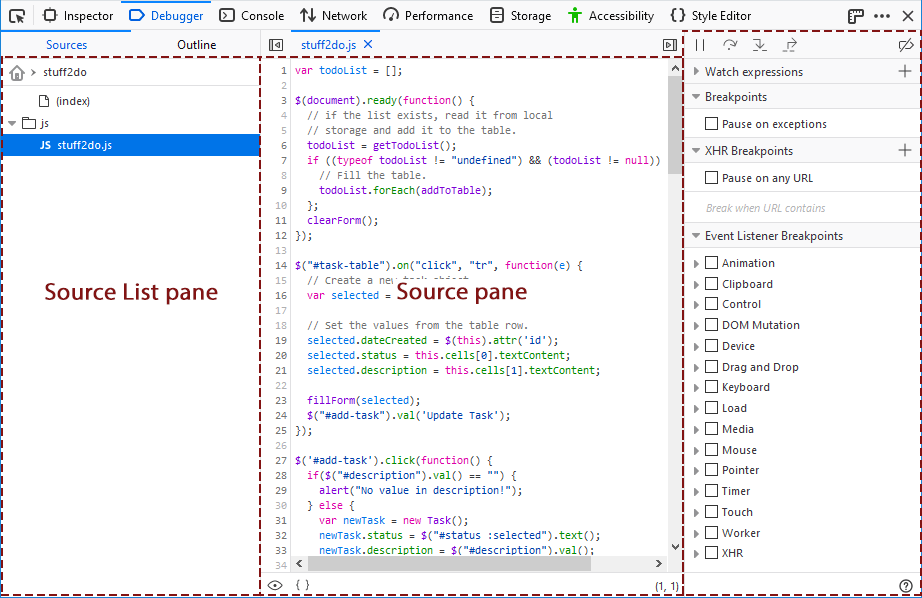
The source list pane lists all the JavaScript source files loaded into the page (including scripts for active web workers), and enables you to select one to debug. At the top level sources are organized by origin, and under that they're organized by the directory structure from which they are served.
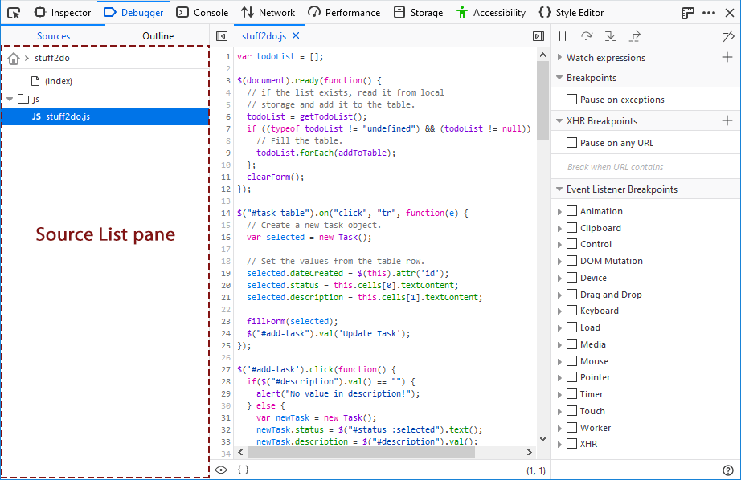
You can search for a file using Ctrl + P (Cmd + P on a Mac).
Web Extensions are listed in the Source List pane using the extension's name.
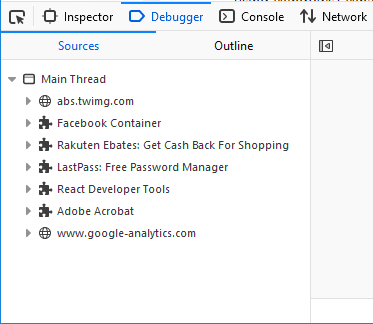
There are several context menu options available for individual files and folders or groups; typically viewed by right-clicking on the item.
For files, the following context menu options are available:
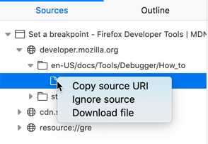
For folders and groups, the following context menu options are available:
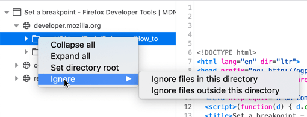
The Outline view shows a tree for navigating the currently open file. Use it to jump directly to a function, class or method definition.
This shows the JavaScript file currently loaded.
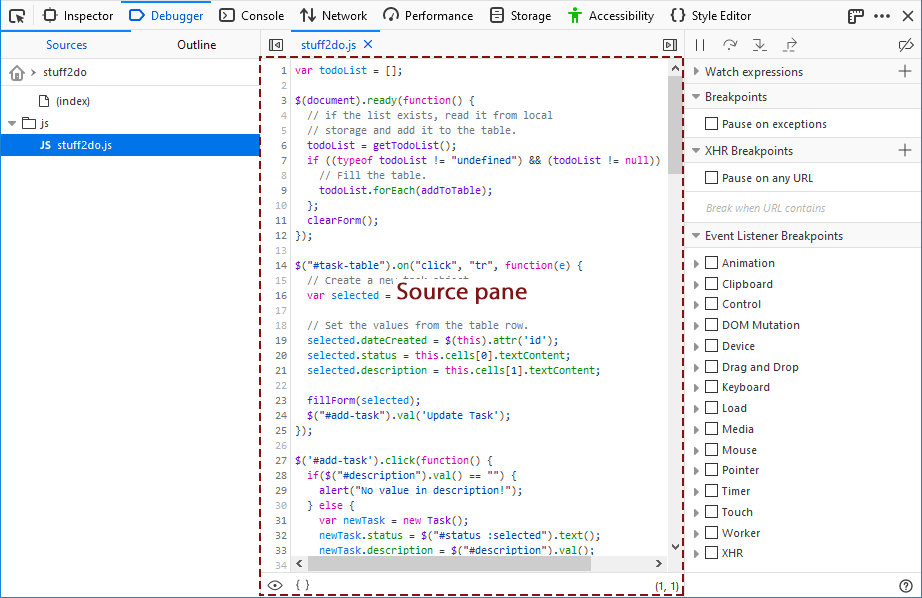When the source pane is focused you can search for a string in the file using Ctrl + F (Cmd + F on a Mac).
Breakpoints have a blue arrow overlaid on the line number. Conditional breakpoints have an orange arrow. If you're stopped at a breakpoint, the entire line gets a green overlay. In the screenshot below there are three breakpoints:
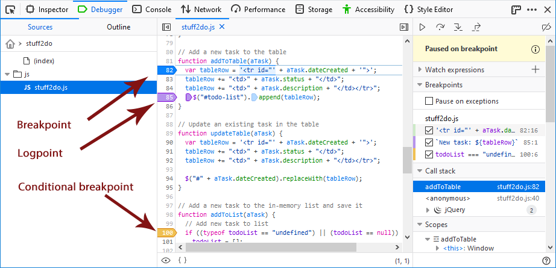
The third column shows more information about the breakpoints. For example, the logpoint at line 85 logs the value of the tableRow variable to the console and the conditional breakpoint at line 100 breaks if the contents of the todoList is undefined.
The source pane provides the following context menu options:
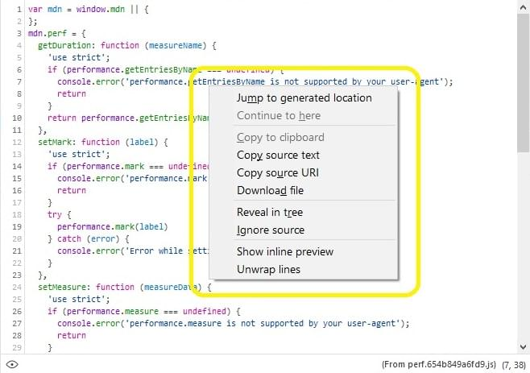
At the top of the right-hand pane, there's a toolbar:
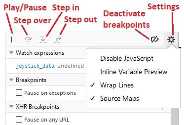
The toolbar consists of:
Under the toolbar, you'll see all the breakpoints you've set. Next to each breakpoint is a checkbox which you can use to enable/disable it:
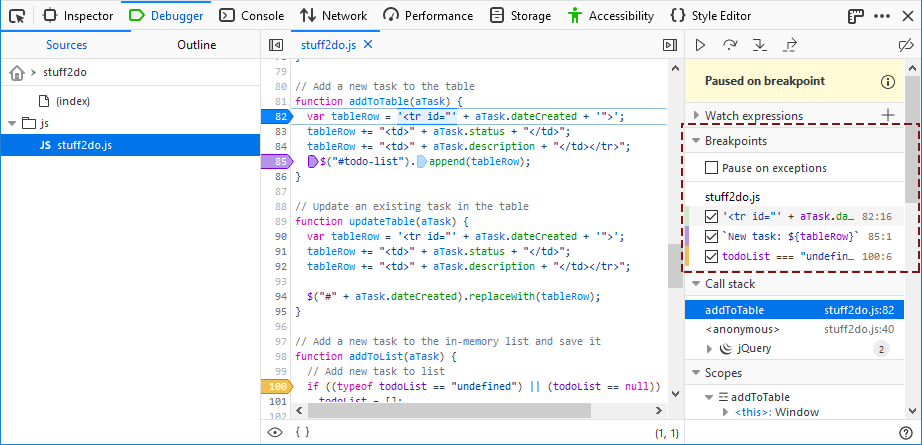
You can add watch expressions in the right pane. They will be evaluated when code execution is paused:
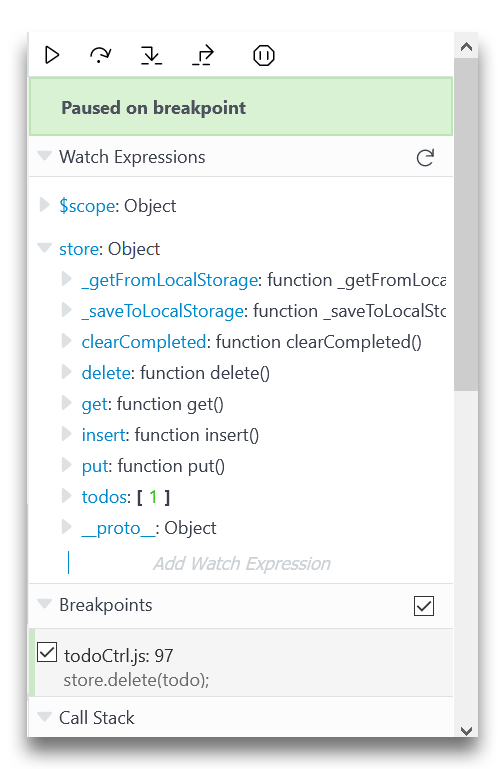
Hover on a variable show a tooltip with its value inside:
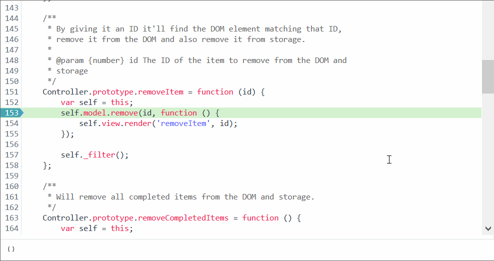
The call stack becomes visible when the debugger is paused.
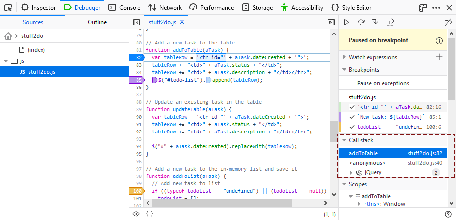
The stack lists the chain of functions that are waiting to complete, with the frame for the function that was called last at the top (i.e. the most deeply nested function). Selecting a line opens the associated file in the source pane, at the specified location. It also updates the Scopes section with the variables for that frame/scope.
Note: The call stack is a useful tool for tracking execution flow through your application! It allows you to confirm that functions are called in the order you expect, and with sensible variable values.
Call stack lines for frames in your own code show the function name and the file location in which it was called.
Note: If you click Step over (F10) after changing the selected line in the source pane, the debugger executes until reaching the line following the newly-selected line (disregarding whatever line the debugger originally stopped at).
Lines for JavaScript frameworks/libraries used by your code (React, jQuery, Angular, Webpack, Backbone etc.) are grouped by default, and represented by a framework-specific icon (see the jQuery frame in the screenshot above). Generally you won't want to debug into the code of frameworks or libraries, so grouping these reduces the complexity of the call stack list. You can still expand and inspect the grouped frames if needed, or disable framework grouping using a context menu option: Disable framework grouping.
You can also use the context menu to Ignore source for a particular line. This will remove the line from the call stack, and the debugger will subsequently skip through any calls into that file. Note that you'll have to use the source pane "eye icon" or source list if you want to Unignore the source later!
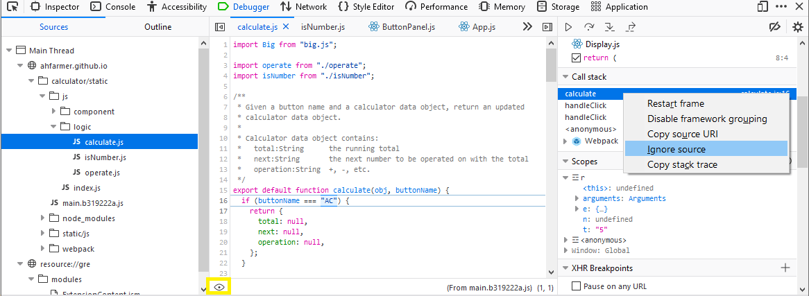
Right-/Ctrl- clicking in the call stack pane opens a context menu with the following items:
In the right-hand pane you'll see a label "Scopes" with a disclosure arrow next to it. When the debugger's paused, you'll be able to expand this section to see all objects that are in scope at this point in the program:
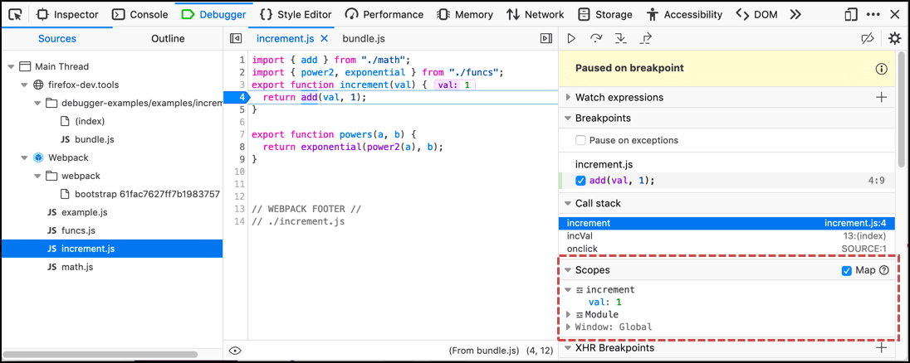Objects are organized by scope: the most local appears first, and the global scope (Window, in the case of page scripts) appears last.
Within the Scopes pane, you can create watchpoints that pause the debugger when a value is read or assigned.